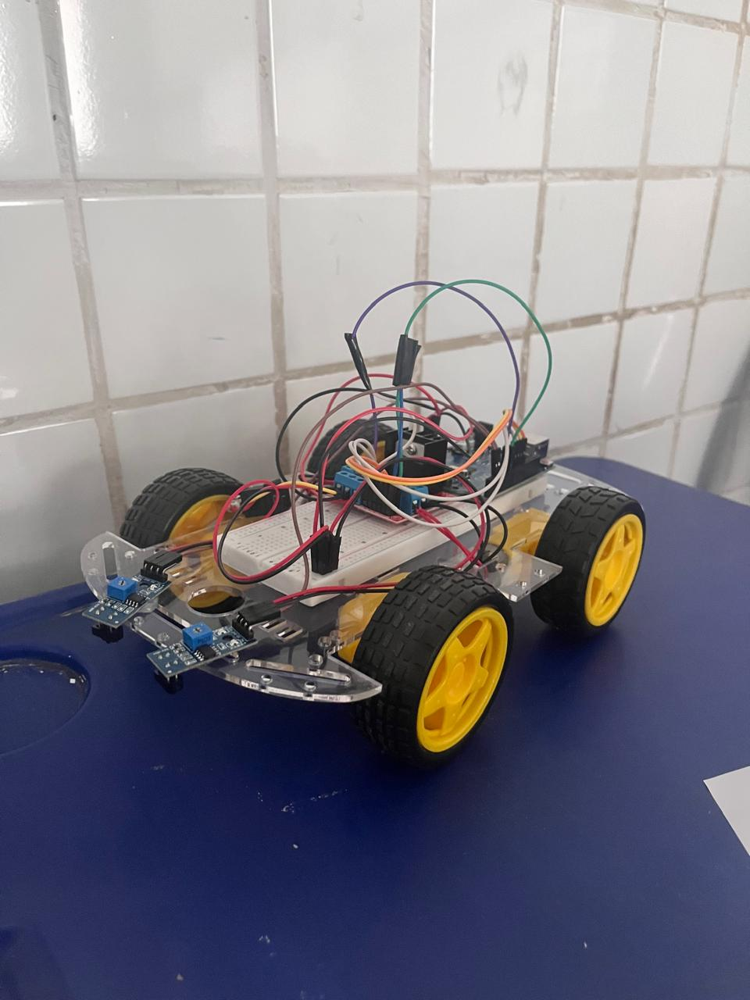
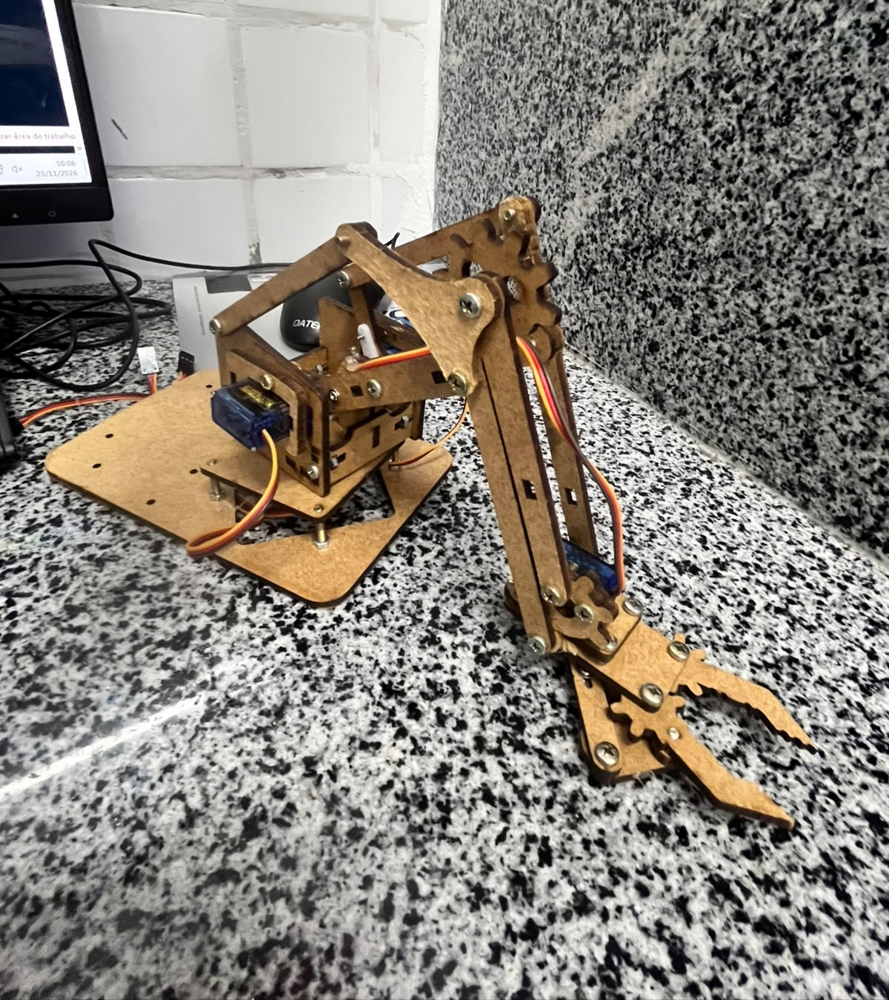
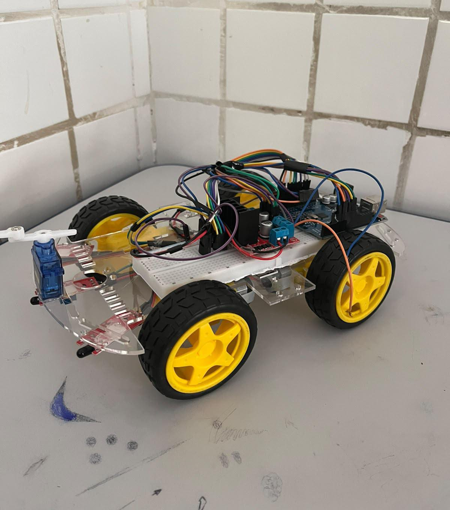

NOSSOS ROBÔS
Conheça os quatro projetos desenvolvidos pela nossa turma.

01. Robô seguidor de linha
Robô segui automaticamente uma linha preta no chao, utilizando sensores para indetificar o caminho.
Componentes: Arduino UNO, sensor de linha, motores e ponte H.
Criador: Hernandes

02. Robô Desviador de obstaculos
Esse robô tem como objetivo detectar objetos à sua frente e deviar automaticamente
Componentes: Arduino UNO, sensor ultrassonico, motores, servo motor e ponte H.
Criador: Emanuel

03. Garra Robótica com Servomotores
Projeto de uma garra robótica capaz de realizar movimentos para pegar e movimentar pequenos objetos.
Componentes: Arduino, servomotores, estrutura e fios.
Criador: Fernando

04. Robô Carro de bombeiro
Ele tem como objetivo identificar a presença de fogo e aciona uma pequena bomba de água para apagar.
Componentes: Arduino UNO, motores, sensor de temperatura, mini bomba de agua, reservatorio, mangueira e estrutura.
Criador: Lucas